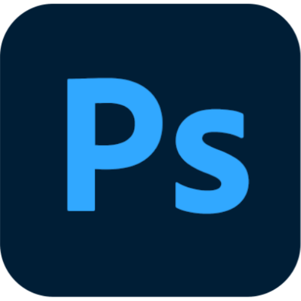
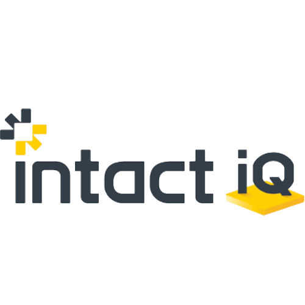
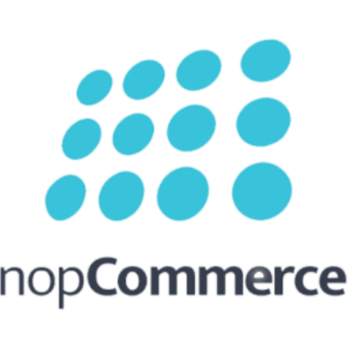
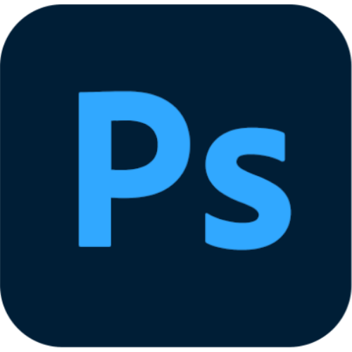
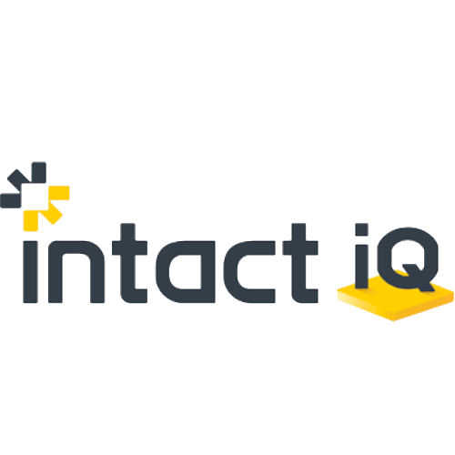
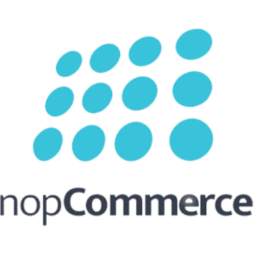

Alfie Goodman | Website & Digital Administrator | ECF Ltd
Alfie Goodman | Website & Digital Administrator | ECF Ltd
I began my career working with internal systems and product data, focusing on keeping information accurate, consistent, and well-structured. My role has since developed into a more digital-focused position, where I help manage our e-commerce platform, update website and product content, and support SEO and other digital improvements.
I work with languages and tools such as HTML, CSS, nopCommerce, Intact iQ, and basic image and video editing for web use using Adobe Photoshop, DaVinci Resolve, and Sony Vegas. Mostly self-taught, with a practical approach to problem solving and workflow improvements.
I enjoy learning new coding languages, creating digital content, problem solving, and finding practical ways to improve how information is presented online. Outside of work, I’ve been a Leicester City season ticket holder since 2013, and enjoy travelling, gaming, film & TV, and spending time with friends.
 





Here is where I plan to place work in progress/finished projects.